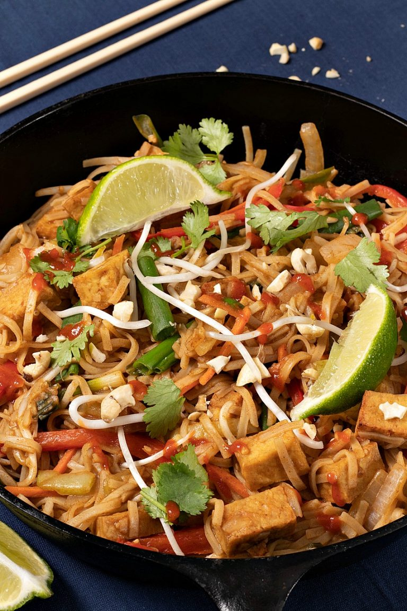

Pad Thai

Description
Ahhhh Vegan Pad Thai where have you been all my life? Chewy rice noodles with a sweet, tangy sauce? And the best part of all is it's super easy to make and ready in less than an hour.
Ingredients
- 8 oz rice noodles
- 16 oz extra firm tofu
- ½ white onion
- ½ red bell pepper
- ½ cup shredded carrot
- ½ cup chopped baby bok choy
- 1 tsp minced garlic
- ½ cup sliced green onions
- ½ cup mung bean sprouts
- Optional - crushed peanuts, cashews, cilantro for garnish
Sauce
- 5 dates
- ½ cup water
- 4 Tbs low-sodium soy sauce (tamari for GF)
- 2 Tbs rice vinegar
- 2 Tbs lime juice
- 2 Tbs vegan Worchestershire
- 1-2 tsp sriracha
Steps
- Soak noodles in warm water for 30 min
- Press and cut tofu into 1-inch cubes
- Bake or air fry tofu for 15 min @375° F, set aside
- Remove pits from dates and add to blender
- Blend all sauce ingredients until smooth
- Toss baked tofu with sauce to marinate until needed
- Chop all veggies and prepare pan or wok
- Using a little water or veg broth, heat up pan and add onion
- Add peppers, carrots, and bok choy and stir fry until just softened
- Add garlic and stir for 30 seconds
- Add sauce and tofu - mix well and cook for an additional 1-2 min
- Drain noodles and add to pan - mix well
- Add green onions and bean sprouts and stir
- Cook 1-2 min until veggies and noodles are done
- Garnish with crushed peanuts, more green onions, cilantro, and/or sriracha